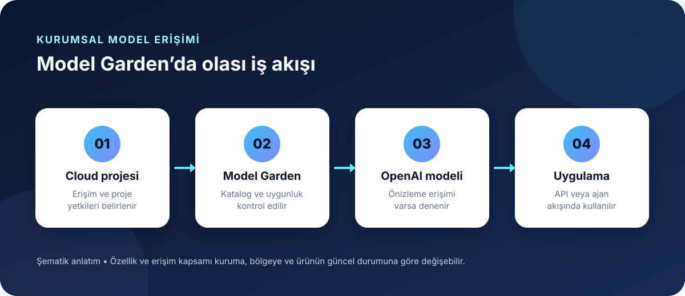
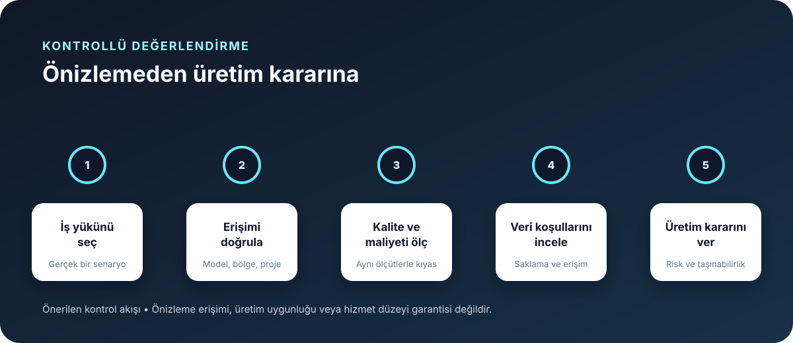

OpenAI ve Google Cloud, OpenAI modellerini Google Cloud’un Model Garden kataloğuna getirmek için ortaklık duyurdu. Bu haber, Google Cloud kullanan şirketlere yeni bir model erişim ve satın alma yolu sunuyor. Ancak duyuru, modellerin herkese açıldığı anlamına gelmiyor: Google seçili kurumsal müşteriler için özel önizlemeden söz ediyor; genel erişimin önümüzdeki haftalarda başlaması planlanıyor.
Duyuruda ne var?
OpenAI’nin 21 Ekim tarihli açıklamasına göre şirketin ileri seviye modelleri ve Codex ajan iş akışları Google Cloud Model Garden’a gelecek. Müşteriler satın alımı Google Cloud Marketplace üzerinden yapabilecek; Google Cloud harcama taahhüdü bulunan kuruluşlar, uygun alımları bu taahhütlerden düşebilecek. OpenAI, genel kullanıma açılış için kesin bir gün vermeden “önümüzdeki haftalar” ifadesini kullanıyor.
Google Cloud’un aynı gün yayımladığı ürün duyurusu ilk erişim aşamasını daha ayrıntılı anlatıyor. Google’a göre GPT-Astra, GPT-6.1 Sol ve GPT-6 Luna seçili kurumsal müşteriler için özel önizlemeye alınıyor. Şirket ayrıca API üzerinden deneme ve yerel Codex CLI/Desktop iş akışlarını Gemini platformuna bağlayarak çıkarım yapma olanağından söz ediyor. Erişim talebi göndermek, önizlemeye kabul veya genel kullanıma hazır hizmet garantisi değildir.
| Başlık | 21 Ekim itibarıyla bilinen |
|---|---|
| Erişim | Seçili kurumsal müşterilerde özel önizleme; genel erişim önümüzdeki haftalar için planlanıyor. |
| İlk modeller | Google’ın duyurusunda GPT-Astra, GPT-6.1 Sol ve GPT-6 Luna listeleniyor. |
| Satın alma | Google Cloud Marketplace; mevcut harcama taahhütlerinin kullanımı mümkün olabilir. |
| Fiyat ve bölgeler | Açıklamalarda tam model fiyat listesi ve kullanılabilir bölgeler belirtilmiyor. |

Şirketler için asıl değişiklik: erişim ve faturalandırma yolu
Google Cloud üzerinde veri, kimlik ve uygulama altyapısı kullanan bir kuruluş için modelleri aynı bulut kataloğunda değerlendirebilmek satın alma sürecini sadeleştirebilir. Birden fazla sağlayıcıya ayrı fatura ve sözleşme açmak yerine, uygun kullanımı Marketplace üzerinden yürütmek ve harcamayı mevcut taahhütle ilişkilendirmek mümkün olabilir.
Bu, kendiliğinden daha ucuz kullanım demek değildir. Duyurularda model başına kesin fiyat, kullanım kotası veya kabul edilmiş iş başına maliyet karşılaştırması yayımlanmadı. Bir Google Cloud taahhüdünden düşülebilmesi bütçe muhasebesini değiştirebilir; kuruluşun ödediği gerçek toplamı tek başına azaltmaz. Kurumlar API maliyetinin yanında tekrar denemeleri, gecikmeyi, araç çağrılarını, veri aktarımını ve insan inceleme süresini de ölçmeli.
Veri güvenliği açıklamalarını nasıl okumalı?
OpenAI, entegrasyonun Google Cloud’un erişim kontrolleri, merkezi veri yönetişimi ve altyapısıyla birlikte çalışacağını söylüyor. Google ise istemlerin, bağlamın ve çıktıların müşterinin belirlediği veri sınırı içinde kalacağını ve temel modelleri eğitmek için kullanılmayacağını belirtiyor. Bunlar hizmet sağlayıcıların açıklamalarıdır; kuruluşun kendi sözleşmesi, bölge seçimi ve yapılandırmasıyla doğrulanması gerekir.
Ayrıntılardaki zaman farkı önemli: Google’ın duyurusunda sıfır veri saklama (ZDR) seçenekleri ile Confidential Compute “yakında” sunulacak özellikler olarak geçiyor. Bir önizleme ortamında bu kontrolleri bugün etkin sanmayın. Hassas veriyle üretim denemesine geçmeden önce hangi günlüklerin tutulduğunu, verinin hangi bölgede işlendiğini, sağlayıcıların hangi alt işleyenlere eriştiğini ve silme talebinin nasıl uygulandığını yazılı ürün koşullarından kontrol edin.

Microsoft ortaklığı sona mı eriyor?
Hayır; bu duyurudan böyle bir sonuç çıkmıyor. OpenAI, Microsoft’un birincil bulut ortağı olmaya devam ettiğini özellikle belirtiyor. Google Cloud bağlantısı, OpenAI modelleri için ek bir kurumsal dağıtım ve satın alma kanalıdır. Bu tek başına mevcut Azure ilişkilerinin, ürün anlaşmalarının veya müşterilerin kullandığı altyapının değiştiğini göstermiyor.
Google ayrıca OpenAI modellerinin ileride Google Antigravity ve Gemini Agent ürünlerinde yer alacağını söylüyor. “İleride” ifadesi burada da önemli: bu entegrasyonlar duyuru tarihinde bütün kullanıcılara açık özellikler olarak sunulmuş değil.
Bir pilot başlatmadan önce kontrol listesi
- Önizleme erişimini doğrulayın. Hangi modelin, hangi bölgede ve hangi projede kullanılabildiğini hesap panelinden teyit edin.
- Aynı iş yüküyle karşılaştırın. Kendi kod, belge veya destek görevlerinizden anonimleştirilmiş örnekler seçin; doğruluk ve kabul ölçütlerini önceden belirleyin.
- Sonuç başına maliyeti ölçün. Yalnızca token fiyatına bakmayın; tekrar denemeyi, araç kullanımını ve insan düzeltmesini de hesaba katın.
- Veri koşullarını yazılı inceleyin. Saklama süresi, eğitimde kullanım, bölge, günlükler, erişim sınırları ve sözleşmedeki sorumlulukları netleştirin.
- Taşınabilirliği test edin. Uygulamanızı tek bir model sağlayıcısına bağlamadan önce API farklarını, kimlik doğrulamayı, oran sınırlarını ve hata davranışlarını deneyin.
- Önizlemeyi üretimden ayırın. Teste kabul edilmek, hizmet düzeyi taahhüdü veya kesintisiz üretim erişimi anlamına gelmez.
Bireysel kullanıcılar için hemen ne değişiyor?
Bu duyuru ChatGPT aboneliğini veya tüm kullanıcılar için ChatGPT’nin çalışma biçimini değiştirmiyor. Konu, Google Cloud kullanan kuruluşların OpenAI modellerini kurumsal Model Garden üzerinden değerlendirebilmesi. Geliştiriciler için erişim kapsamı ve araçların nasıl bağlanacağı açıklığa kavuştukça yeni kullanım seçenekleri doğabilir; fakat bugünkü bilgiyle bireysel hesaplarda ücretsiz ya da genel erişim açıldığını söylemek doğru olmaz.
Sık sorulan sorular
OpenAI modelleri Google Cloud’da bugün herkese açık mı?
Hayır. Google seçili kurumsal müşteriler için özel önizleme duyurdu. Genel erişim planı “önümüzdeki haftalar” olarak anlatılıyor; kesin tarih verilmedi.
Bu, Google Cloud kullanan şirketler için kesin tasarruf sağlar mı?
Hayır. Mevcut Google Cloud taahhütlerini kullanma olanağı faturalandırma yolunu etkileyebilir; ancak fiyat listesi ve gerçek iş başına maliyet yayımlanmadan tasarruf miktarı çıkarılamaz.
Google verilerin modeli eğitmek için kullanılmayacağını söylüyor mu?
Evet, Google duyurusunda istem, bağlam ve çıktılar için bu taahhüt yer alıyor. Bununla birlikte saklama, bölge ve diğer sözleşme koşullarını kuruluşun kullanacağı hizmet ve önizleme yapılandırması için ayrıca doğrulaması gerekir.
Sonuç: yeni kanal, henüz tamamlanmış ürün değil
21 Ekim duyurusu, OpenAI modelleri ve Codex iş akışları için Google Cloud’da yeni bir kurumsal erişim yolu açıyor. İlk modeller seçili müşterilere özel önizlemede; Marketplace satın alımı ve mevcut harcama taahhütlerinin kullanımı dikkat çeken operasyonel yenilikler. Ancak genel açılış tarihi, eksiksiz fiyatlandırma ve bazı veri kontrollerinin kullanılabilirliği henüz net değil. Kurumlar bugünkü duyuruyu satın alma kararı olarak değil, kontrollü bir pilot için başlangıç noktası olarak ele almalı.
Bu yazı 21 Ekim 2026 tarihli duyurulara dayanır. Ürün erişimi ve koşulları değişebilir; değerlendirmelerimiz duyurulardaki bilgilerle sınırlıdır.
Kaynaklar
- OpenAI: OpenAI models are coming to Google Cloud (21 Ekim 2026)
- Google Cloud: Google Cloud expands model choice and flexibility, bringing OpenAI models to customers (21 Ekim 2026)
Görsel: Bulut altyapısını temsil eden Unsplash fotoğrafı; etkinlik ekran görüntüsü değildir.
TechWave’de yapay zekâ ve otomasyon haberlerini inceliyoruz. Yapay zekâ ajanlarının sınırları üzerine önceki yazımızı da okuyabilirsiniz.